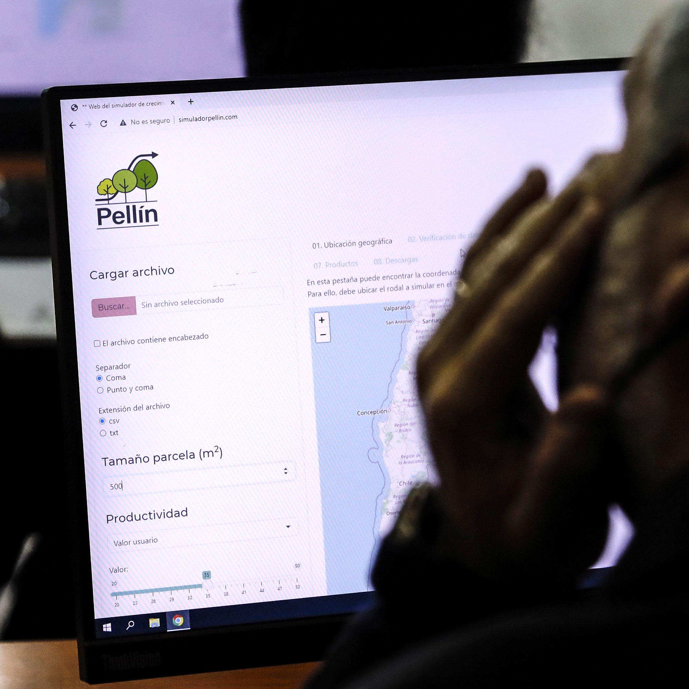
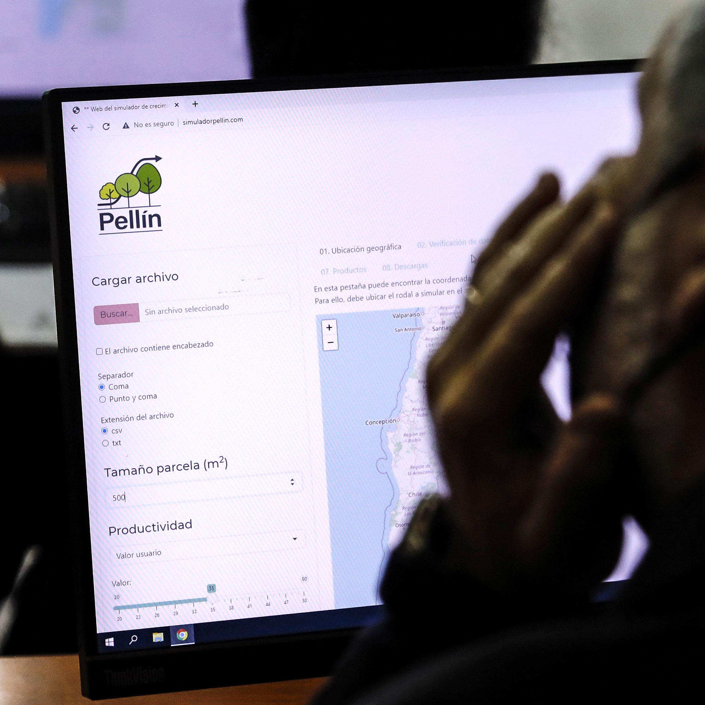

Pellín: un simulador de bosques nativos
 

Contexto
Este sitio web es la puerta de entrada a Pellín: un prototipo de simulador de crecimiento de bosques nativos. Este simulador se basa en un modelo de crecimiento que es un sistema de ecuaciones matemático-estadísticas que predice el cambio de variables de estado en el tiempo para bosques naturales en Chile. En específico, esta versión esta desarrollada para bosques secundarios dominados por Nothofagus obliqua (roble), N. alpina (raulí), y N. dombeyi (coihue) en el centro-sur de Chile. Este tipo de bosques son conocidos en Chile como renovales del tipo forestal roble-raulí-coihue (Donoso 1981), y han sido caracterizados en diversos estudios (Puente et al. 1979; Donoso 1993; Grosse and Quiroz 1999; Salas-Eljatib et al. 2018).
Pellín es un prototipo de simulación de bosques basado en un modelo de crecimiento a nivel de árbol individual independiente de la distancia e independiente de la edad. El modelo se basa en un trabajo de modelación que se ha venido llevando a cabo bajo la dirección del Profesor Christian Salas-Eljatib y con la participación del equipo de co-investigadores, colaboradores, asistentes de investigación y estudiantes.
Precaución
Tal como se indicó anteriormente, este simulador es un prototipo, y una serie de mejoras e implementaciones serán realizadas en el futuro cercano. Se espera que mientras se le de uso a Pellín, aparezcan problemas que deberán ser solucionados, por lo cual es vital contar con la retroalimentación de los usuarios. Es por esta razón, que se invita a los usuarios de Pellín, que nos indiquen potenciales problemas con este mismo, así como también en el caso de estar interesad@ en contribuir a la mejora de este.
En este mismo contexto, es necesario aclarar que el uso del presente prototipo es realizado bajo la completa responsabilidad del usuario, y en caso del equipo desarrollador no asume responsabilidad alguna.